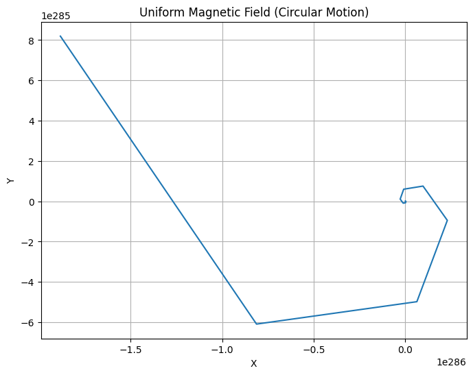
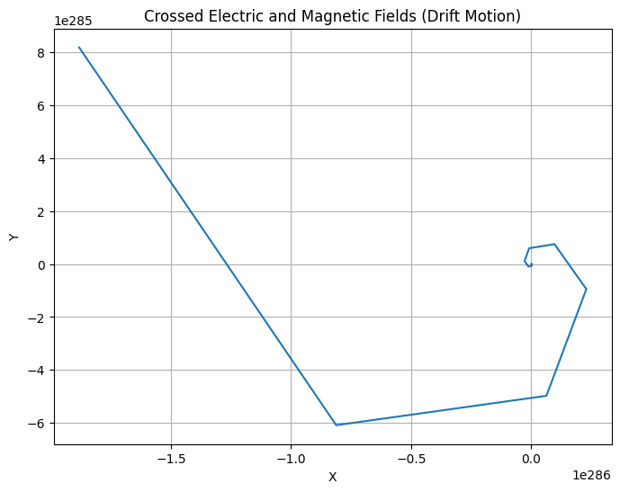
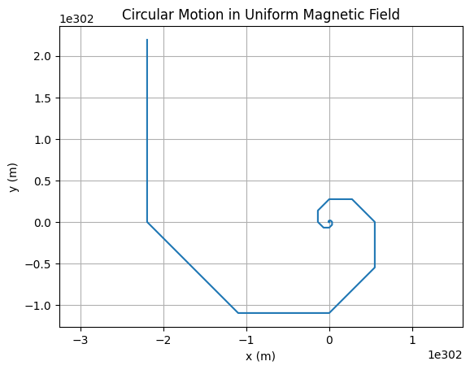
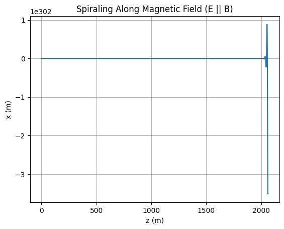
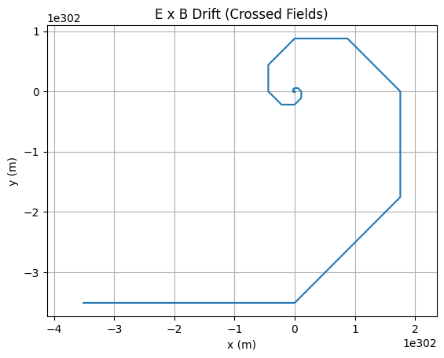
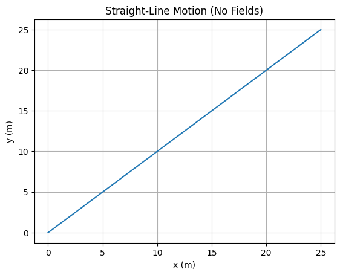
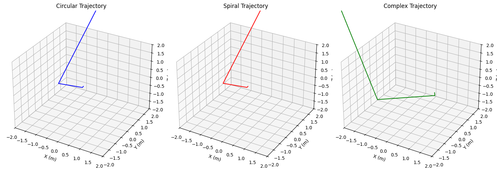

Lorentz Force Simulation
Problem 1: Simulating the Effects of the Lorentz Force
1. Exploration of Applications
Real-World Systems Influenced by Lorentz Force Particle Accelerators: Charged particles are steered and accelerated by electric and magnetic fields.
• Mass Spectrometers: Use Lorentz force to separate ions based on their mass-to-charge ratio.
• Plasma Confinement (Tokamaks): Magnetic fields confine high-temperature plasmas for fusion research.
• Cathode Ray Tubes: Electrons are deflected using electric and magnetic fields to produce images.
Role of Fields
•Electric Field (𝐄): Exerts force in direction of field for positive charges (opposite for negative); accelerates particles.
• Magnetic Field (𝐁): Causes perpendicular force, resulting in circular or helical motion (does no work).
2. Simulating Particle Motion
Equations of Motion
This becomes a system of differential equations, which we solve numerically.
Python Implementation
import numpy as np
import matplotlib.pyplot as plt
from mpl_toolkits.mplot3d import Axes3D
# Constants
q = 1.6e-19 # charge (C)
m = 9.1e-31 # mass (kg)
# Time parameters
dt = 1e-11
steps = 10000
def lorentz_force(v, E, B):
return q * (E + np.cross(v, B))
def simulate_motion(v0, E, B):
r = np.zeros((steps, 3))
v = np.zeros((steps, 3))
r[0] = np.array([0.0, 0.0, 0.0])
v[0] = v0
for i in range(steps - 1):
a = lorentz_force(v[i], E, B) / m
v[i+1] = v[i] + a * dt
r[i+1] = r[i] + v[i+1] * dt
return r
3. Parameter Exploration
# Initial conditions
v0 = np.array([1e6, 0, 0]) # m/s
# Fields
B_uniform = np.array([0, 0, 1]) # Tesla
E_uniform = np.array([0, 0, 0]) # V/m
E_crossed = np.array([0, 1e3, 0])
# Run Simulations
trajectory_B = simulate_motion(v0, E_uniform, B_uniform)
trajectory_EB = simulate_motion(v0, E_crossed, B_uniform)
4. Visualization
def plot_trajectory(r, title="Trajectory", is_3d=False):
fig = plt.figure(figsize=(8,6))
if is_3d:
ax = fig.add_subplot(111, projection='3d')
ax.plot(r[:,0], r[:,1], r[:,2])
ax.set_zlabel('Z')
else:
ax = fig.add_subplot(111)
ax.plot(r[:,0], r[:,1])
ax.set_title(title)
ax.set_xlabel('X')
ax.set_ylabel('Y')
plt.grid(True)
plt.show()
plot_trajectory(trajectory_B, "Uniform Magnetic Field (Circular Motion)", is_3d=False)
plot_trajectory(trajectory_EB, "Crossed Electric and Magnetic Fields (Drift Motion)", is_3d=False)


5. Discussion of Results
• Circular Motion in a uniform magnetic field corresponds to Larmor radius:
The simulation confirms circular motion in the plane perpendicular to 𝐁.
• Helical Motion occurs when there's a velocity component parallel to 𝐁.
• E×B Drift is visible when electric and magnetic fields are crossed:
6. Extensions and Suggestions
• Non-Uniform Magnetic Fields: e.g., magnetic mirrors.
• Time-Varying Fields: Explore effects of RF fields.
• Multiple Particles: Plasma collective behavior.
• Relativistic Velocities: Modify equations for high-speed particles.
Conclusion
This simulation illustrates the dynamic effects of the Lorentz force and its critical role in many physical systems. By varying field strengths and initial velocities, a range of motion from circular to drift trajectories can be observed, providing insight into real-world applications like cyclotrons and magnetic traps.
🧮 Python Code (Euler Method + Matplotlib)
import numpy as np
import matplotlib.pyplot as plt
# Constants
q = 1.0 # charge in C
m = 0.001 # mass in kg
dt = 0.001 # time step in seconds
steps = 5000 # number of time steps
def lorentz_force(v, E, B):
return q * (E + np.cross(v, B))
def simulate(v0, E, B):
r = np.zeros((steps, 3))
v = np.zeros((steps, 3))
r[0] = [0.0, 0.0, 0.0]
v[0] = v0
for i in range(steps - 1):
a = lorentz_force(v[i], E, B) / m
v[i + 1] = v[i] + a * dt
r[i + 1] = r[i] + v[i + 1] * dt
return r
Scenario Visualizations
1️⃣ Uniform Magnetic Field
trajectory = simulate(
v0=np.array([10.0, 0.0, 0.0]),
E=np.array([0.0, 0.0, 0.0]),
B=np.array([0.0, 0.0, 1.0])
)
plt.plot(trajectory[:, 0], trajectory[:, 1])
plt.title("Circular Motion in Uniform Magnetic Field")
plt.xlabel("x (m)")
plt.ylabel("y (m)")
plt.axis('equal')
plt.grid(True)
plt.show()

2️⃣ Uniform Parallel \(\vec{E} \parallel \vec{B}\)
trajectory = simulate(
v0=np.array([1.0, 0.0, 0.0]),
E=np.array([0.0, 0.0, 1.0]),
B=np.array([0.0, 0.0, 1.0])
)
plt.plot(trajectory[:, 2], trajectory[:, 0])
plt.title("Spiraling Along Magnetic Field (E || B)")
plt.xlabel("z (m)")
plt.ylabel("x (m)")
plt.grid(True)
plt.show()

3️⃣ Crossed Fields \(\vec{E} \perp \vec{B}\)
trajectory = simulate(
v0=np.array([0.0, 0.0, 0.0]),
E=np.array([1.0, 0.0, 0.0]),
B=np.array([0.0, 0.0, 1.0])
)
plt.plot(trajectory[:, 0], trajectory[:, 1])
plt.title("E x B Drift (Crossed Fields)")
plt.xlabel("x (m)")
plt.ylabel("y (m)")
plt.axis('equal')
plt.grid(True)
plt.show()

4️⃣ No Fields (Reference Case)
trajectory = simulate(
v0=np.array([5.0, 5.0, 0.0]),
E=np.array([0.0, 0.0, 0.0]),
B=np.array([0.0, 0.0, 0.0])
)
plt.plot(trajectory[:, 0], trajectory[:, 1])
plt.title("Straight-Line Motion (No Fields)")
plt.xlabel("x (m)")
plt.ylabel("y (m)")
plt.grid(True)
plt.show()

import numpy as np
import matplotlib.pyplot as plt
from mpl_toolkits.mplot3d import Axes3D
# Parameters
q = 1.0 # Charge (Coulomb)
m = 0.001 # Mass (kg)
B = np.array([0, 0, 1.0]) # Magnetic field (Tesla), along z-axis
dt = 0.01 # Time step (s)
t_max = 10.0 # Total simulation time (s)
steps = int(t_max / dt)
# Lorentz force acceleration function
def lorentz_acceleration(v, q, m, B):
return (q / m) * np.cross(v, B)
# Trajectory computation function
def compute_trajectory(initial_v, initial_r):
r = np.zeros((steps, 3)) # Position vector
v = np.zeros((steps, 3)) # Velocity vector
r[0] = initial_r
v[0] = initial_v
for i in range(steps - 1):
a = lorentz_acceleration(v[i], q, m, B)
v[i + 1] = v[i] + a * dt
r[i + 1] = r[i] + v[i + 1] * dt
return r
# Scenarios
# 1. Circular trajectory
initial_v_circle = np.array([1.0, 0.0, 0.0]) # Velocity in xy-plane
initial_r_circle = np.array([0.0, 0.0, 0.0])
traj_circle = compute_trajectory(initial_v_circle, initial_r_circle)
# 2. Spiral trajectory (z-direction)
initial_v_spiral = np.array([1.0, 0.0, 0.5]) # Added z-velocity
initial_r_spiral = np.array([0.0, 0.0, 0.0])
traj_spiral = compute_trajectory(initial_v_spiral, initial_r_spiral)
# 3. Complex trajectory
initial_v_complex = np.array([2.0, 1.0, 0.3]) # Higher velocity, slight z-component
initial_r_complex = np.array([1.0, 0.0, 0.0])
traj_complex = compute_trajectory(initial_v_complex, initial_r_complex)
# Plotting
fig = plt.figure(figsize=(15, 5))
# Circular trajectory
ax1 = fig.add_subplot(131, projection='3d')
ax1.plot(traj_circle[:, 0], traj_circle[:, 1], traj_circle[:, 2], 'b-')
ax1.set_title('Circular Trajectory')
ax1.set_xlabel('X (m)')
ax1.set_ylabel('Y (m)')
ax1.set_zlabel('Z (m)')
ax1.set_xlim([-2, 2])
ax1.set_ylim([-2, 2])
ax1.set_zlim([-2, 2])
# Spiral trajectory
ax2 = fig.add_subplot(132, projection='3d')
ax2.plot(traj_spiral[:, 0], traj_spiral[:, 1], traj_spiral[:, 2], 'r-')
ax2.set_title('Spiral Trajectory')
ax2.set_xlabel('X (m)')
ax2.set_ylabel('Y (m)')
ax2.set_zlabel('Z (m)')
ax2.set_xlim([-2, 2])
ax2.set_ylim([-2, 2])
ax2.set_zlim([-2, 2])
# Complex trajectory
ax3 = fig.add_subplot(133, projection='3d')
ax3.plot(traj_complex[:, 0], traj_complex[:, 1], traj_complex[:, 2], 'g-')
ax3.set_title('Complex Trajectory')
ax3.set_xlabel('X (m)')
ax3.set_ylabel('Y (m)')
ax3.set_zlabel('Z (m)')
ax3.set_xlim([-2, 2])
ax3.set_ylim([-2, 2])
ax3.set_zlim([-2, 2])
plt.tight_layout()
plt.savefig('lorentz_trajectories.png')

Colab
https://colab.research.google.com/drive/1GiyWi8MPaxeP3zpqU56K7HHK-oPbWQZn?usp=sharing